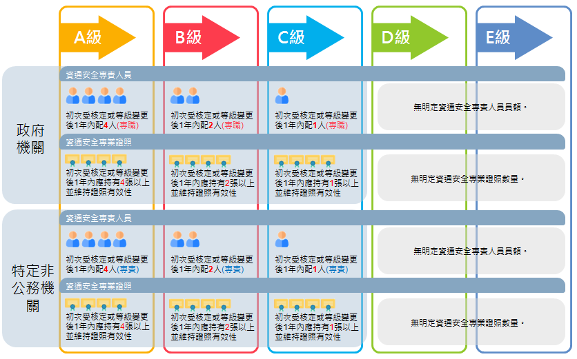

營業秘密法
資通安全法規
- 台灣
- 資通安全管理法
- 子法
- 資通安全管理法施行細則
- 資通安全責任等級分級辦法
- 資通安全事件通報及應變辦法
- 資安維護計畫
- 資通安全責任等級分級辦法
- 分級
- A級: 最高安全等級。全國性。
- B級: 次高安全等級。地區性或有限的區域。
- C級: 自行設置或委外開發資訊系統並設置伺服器 (含承租雲端機房或委外代管)。
- D級: 未自行設置或委外開發資系統未設置伺服器僅自行置辦資訊業務 (例:辦公用資訊服務之勞務及設備採購)。
- E級: 全部資訊業務皆由其它機關兼辦或代辦。
- 人員配置
 人員配置
- 分級
- 資通安全責任等級分級辦法
- 稽核管理改善
- 通報應變機制
- 資通安全事件通報及應變辦法
- 公務機關/非公務機關 知悉資通安全事件
- 通報: 1小時。
- 審核: 第一級或第二級: 8小時／第三級或第四級: 2小時。
- 審核通知: 1小時。
- 完成損害控制或復原: 第一級或第二級: 72小時／第三級或第四級: 36小時。
- 調查、處理及改善報告: 1個月內。
- 公務機關/非公務機關 知悉資通安全事件
- 資通安全事件通報及應變辦法
- 罰則
- 未依規定執行資安維護計畫：新台幣十萬以上、一百萬以下罰鍰。
- 未依規定進行資安事件通報：新台幣三十萬元以上、五百萬以下罰鍰。
- 子法
- 個人資料保護法
- 個人資料：指自然人之姓名、出生年月日、國民身分證統一編號、護照號碼、特徵、指紋、婚姻、家庭、教育、職業、病歷、醫療、基因、性生活、健康檢查、犯罪前科、聯絡方式、財務情況、社會活動及其他得以直接或間接方式識別該個人之資料。
- 個人資料檔案：指依系統建立而得以自動化機器或其他非自動化方式檢索、整理之個人資料之集合。
- 蒐集：指以任何方式取得個人資料。
- 處理：指為建立或利用個人資料檔案所為資料之記錄、輸入、儲存、編輯、更正、複製、檢索、刪除、輸出、連結或內部傳送。
- 利用：指將蒐集之個人資料為處理以外之使用。
- 營業秘密法
- 第 2 條 本法所稱營業秘密，係指方法、技術、製程、配方、程式、設計或其他可用於生產、銷售或經營之資訊。
- 第 3 條 受雇人於職務上研究或開發之營業秘密，歸雇用人所有。但契約另有約定者，從其約定。
- 第 6 條 營業秘密得全部或部分讓與他人或與他人共有。
- 智慧財產權
- 保護著作人著作權益、商業行為之授權（含應用軟體之使用）
- 資通安全管理法
- 個人資料保護
-
台灣: 上述個人資料保護法。
- 適用對象: 我國公務及非公務機關於境外對我國人民個資之蒐集、處理及利用，亦適用我國個資法。
- 適用範圍:
- 一般: 得以直接或間接方式識別個人之資料。
- 特種: 病歷、醫療、基因、性生活、健康檢查及犯罪前科等。
- 當事人權利: 請求製給閱覽、複製本、補充或更正、刪除、停止蒐集、處理或利用。
- 跨境傳輸: 原則允許、例外禁止。
- 監管機關: 分散式管理制度，各中央目的事業主管機關執行檢查、糾正、裁罰權。
-
歐盟
- 一般資料保護規則（ General Data Protection Regulation, GDPR）
- 歐盟公民享有資料刪除、更改、轉移的權利，且企業需保護用戶個資。
- 適用對象: 歐盟境外企業對於歐盟境內當事人提供商品、服務或監控其於歐盟境內行為，該個資處理活動仍適用 GDPR 。
- 適用範圍:
- 數位領域，Cookie、IP、ID、社群網站活動紀錄也都包含其中。
- 一般: 得以直接或間接方式識別當事人之任何資訊，包括透過網路 IP、瀏覽紀錄產生之數位軌跡並得追蹤識別特定當事人之身分。
- 特種: 揭露人種、血統、政治意見、宗教、哲學信仰、工會身分、基因、生物特徵、健康相關、性生活與性傾向之資料。
- 刑事: 前科與犯罪紀錄。
- 當事人權利: 更正權、刪除權、個資可攜權、拒絕權。
- 跨境傳輸: 原則禁止、例外允許。
- 監管機關: 至少一個獨立公務機關，監督 GDPR 之適用。
- 一般資料保護規則（ General Data Protection Regulation, GDPR）
-
經濟合作暨發展組織 (OECD, Organization for Economic Co-operation and Development)
-